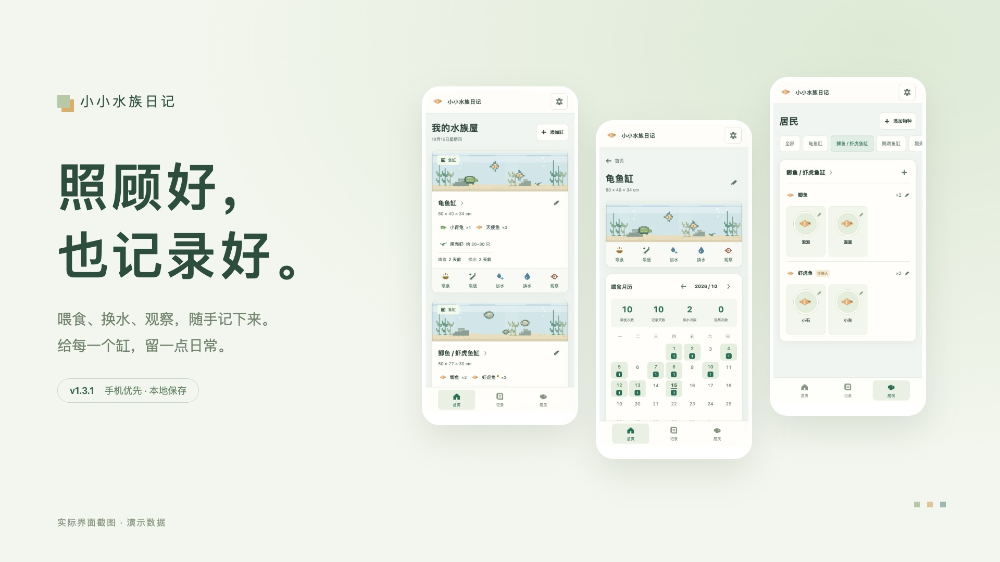
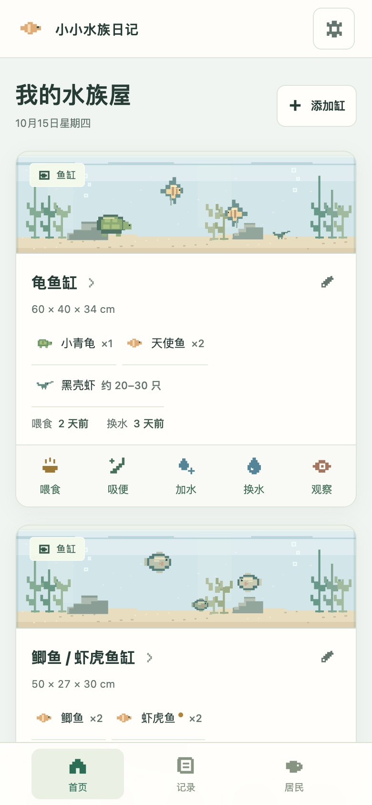
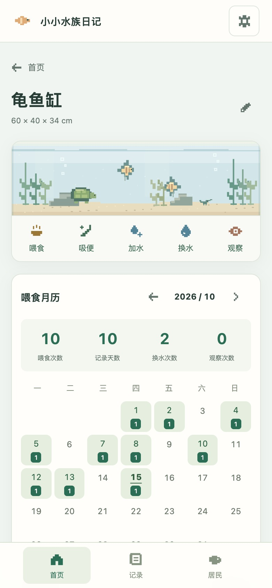
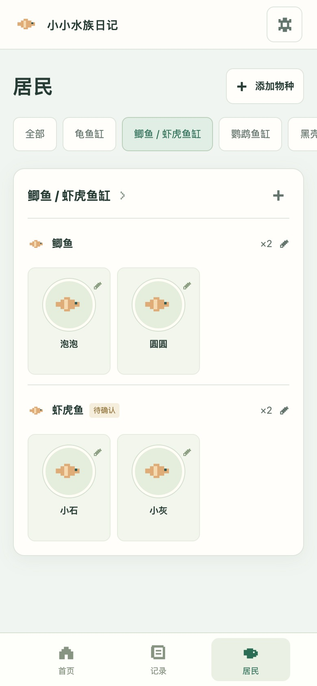

随手记一次维护
喂食、吸便、加水，一点就记时间。换水可以补上升数或比例。
给家里的每一个水中居民
喂食、换水、观察，随手记下来。
多个鱼缸、龟缸和虾桶，在一个日记里。
v1.3.1手机优先 · 本地保存本次更新

每天用起来，轻松一点
喂食、吸便、加水，一点就记时间。换水可以补上升数或比例。
取名字、上传头像，修改物种和数量。新增生物会同步更新缸内名单。
缸里就能看喂食月历。记录支持关键词搜索，观察还可以附照片。
实际操作视频
首页记录、喂食月历、居民命名、数量联动和备份入口。
演示记录与名字均为示例，未读取用户浏览器中的日常记录或个人照片。像素场景为原创插画。
下载 MP4 视频 ↓三个入口，刚刚好



换到新网址前
不同网址各自保存数据。GitHub 源码不包含你的日常记录与照片。
恢复会替换新网址当前的数据；如果已经开始记录，先备份这份数据。
本次更新